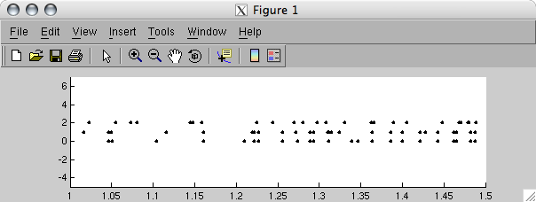
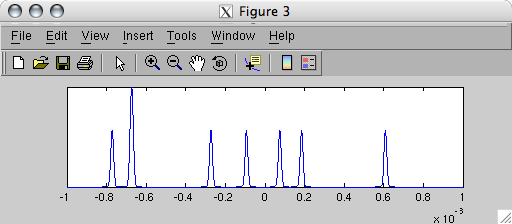
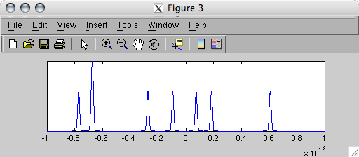

| Spike Toolbox |
|
Generating advanced spike trains
This topic discusses spike train generation, with particular emphasis on generating spike trains with complex temporal structure. Here we assume you have read through the toolbox tutorial as well as Understanding spike trains.
 Available frequency profilesTemporal properties of spike train generatorsGenerating correlated spike trainsNon-ergodic spike trains
Available frequency profilesTemporal properties of spike train generatorsGenerating correlated spike trainsNon-ergodic spike trains
Available frequency profiles
STCreate provides access to several ways of defining an abstract spike train in terms of its frequency profile. These profiles define an ideal spike train -- when the train is instantiated it will most likely have some element of stochasticity which deviates from the abstract definition. Here is a list of the available frequency profiles:
'constant' - A constant-frequency spike train is just that -- a train where the average frequency is constant for the entire train.'linear' - This profile allows trains to be described with a linear change in average frequency over the duration of the train. The user specifies the start and end frequencies in Hz.'sinusoid' - A spike train with a sinusoidal frequency profile has an ideal instantaneous freqeuncy defined by a sine wave. The user specifies a minimum and maximum value for spike train frequency, as well as the cycle period.
Temporal properties of spike train generators
STInstantiate provides an interface to several spike train generation modes:
Generating correlated spike trains
STInstantiate provides options for generating a set of spike trains with an arbitrary correlation structure.
[stTrain] = STInstantiate(stTrainDef, <'regular' / 'poisson'>, tDuration ...
<, mCorrelation, fMemTau>)
mCorrelation should be a matrix defining the desired pair-wised degreee of correlation between a set of spike trains. Either a single spike train definition can be supplied, or an individual definition for each train. The matrix itself should be in upper-triangular form, with unit diagonal elements. A value of 1 indicates perfect correlations between two trains, a value of -1 indicates perfect anti-correlations.
Since spike trains are generated by thresholding a random sequence, mCorrelation specifies the correlation structure between several random sequences, rather than being defined on the set of spike trains itself.
stLinear = STCreate('linear', 10, 80);
mCorr = [1.0 0.99 -0.9;
0.0 1.0 -0.9;
0.0 0.0 1.0];
stCellLinear = STInstantiate(stLinear, 'poisson', 3, mCorr);
Instantiating: Chunk [02/02] Generating correlated sequence...
stLinear = STMultiplex(STMap(stCellLinear, [0 1 2], 0));
STPlotRaster(stLinear);
axis([1 1.5 -5 7]);

The spikes mapped to neurons 0 and 1 are more or less correlated, in the sense that spikes mostly fall together and non-spike stretches generally occur together. Neurons 0 and 3 are generally anti-correlated, in the sense that spikes never occur at the same time. This is more clearly visible when we look at the pair-wise cross-correlograms of the spike trains:
figure, STCrossCorrelation(stCellLinear{1}, stCellLinear{2})
figure, STCrossCorrelation(stCellLinear{1}, stCellLinear{3})
 

Over a window of 2 ms the first and second spike trains are almost perfectly correlated, whereas the first and third spike trains are obviously anti-correlated. Note that the scales of the two cross-correlograms are normalised, and so peak magnitudes cannot be compared directly.
Non-ergodic spike trains
By default the poisson sequences used to generate poisson spike trains are perfectly ergodic, or memory-less. STInstantiate can optionally generate non-ergodic spike trains, employing exponential memory with a user-defined time constant. Generating non-ergodic trains will increase the chance of spikes occurring together, making the spike trains more "bursty". Since the non-ergodicity again occurs on a bin-by-bin basis (down to the level of the instance temporal resolution), it might be worthwhile to increase the bin size when generating these trains.
stLinear = STCreate('linear', 10, 80);
stLinear = STInstantiate(stLinear, 'poisson', 3, [], 1e-3);
figure, STPlotRaster(stLinear);
...please put a figure here...
References
[1] Lewis AW, Shedler GS. Simulation of Nonhomogeneous Poisson Processes by Thinning. 1978, Technical report, Naval Postgraduate School Monterey California.
|
|
Random number generators
|